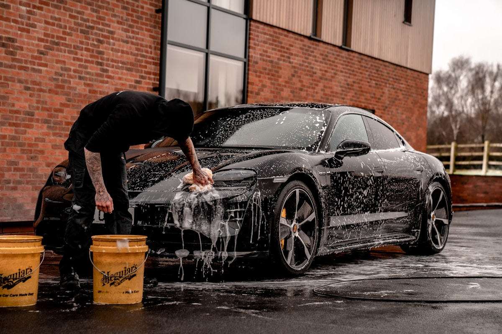

Preto profundo
Detailing externo e descontaminação · Porsche 911
TRABALHOS SELECIONADOS
Alguns dos carros que passaram pelo processo Vértice, do diagnóstico à entrega.
Filtre por tipo de trabalho e veja de perto a diferença que o processo produz.
Detailing externo e descontaminação · Porsche 911

Detailing interno e hidratação · SUV premium

Revestimento de alta performance · BMW 320i

Polimento técnico e acabamento · Audi A3
ANTESDEPOISConte o que você quer melhorar. A gente avalia o veículo e monta um cuidado sob medida.
Agendar avaliação ↗